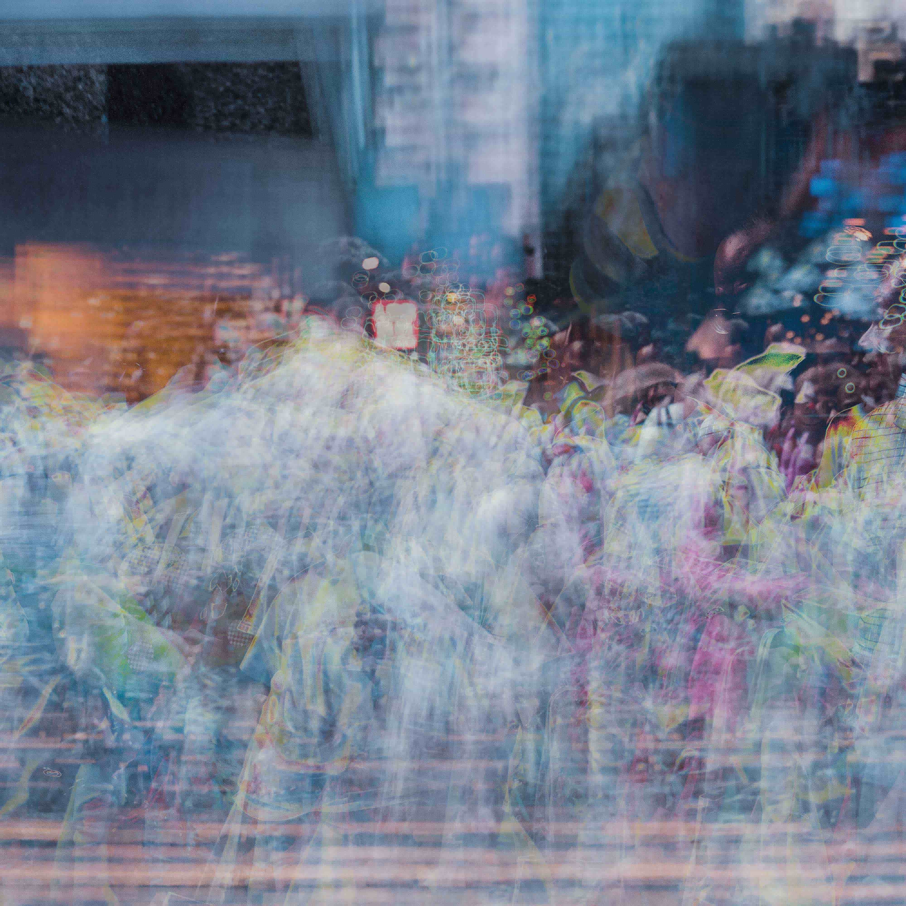
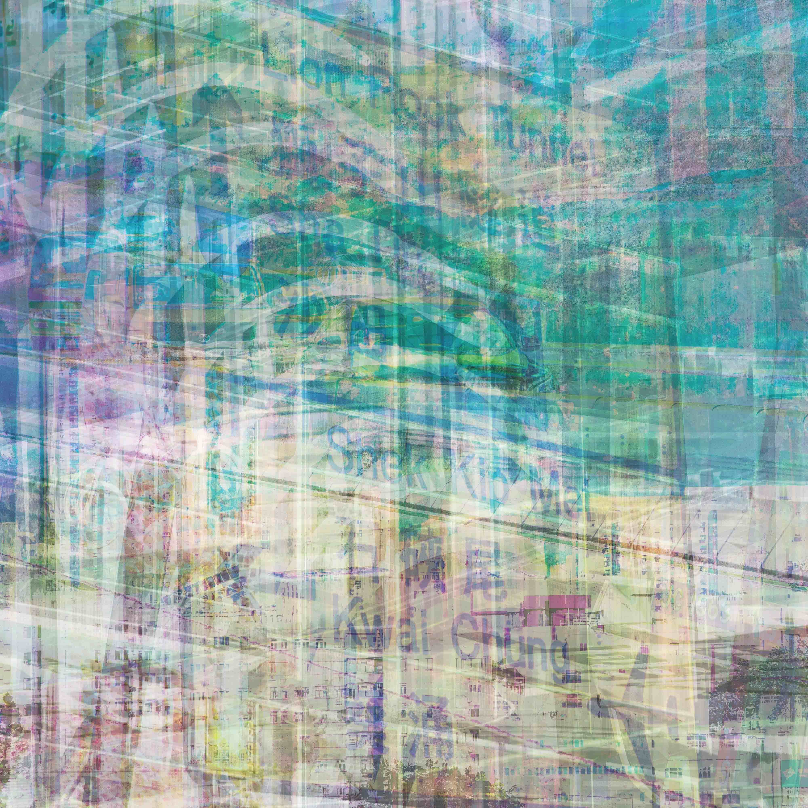
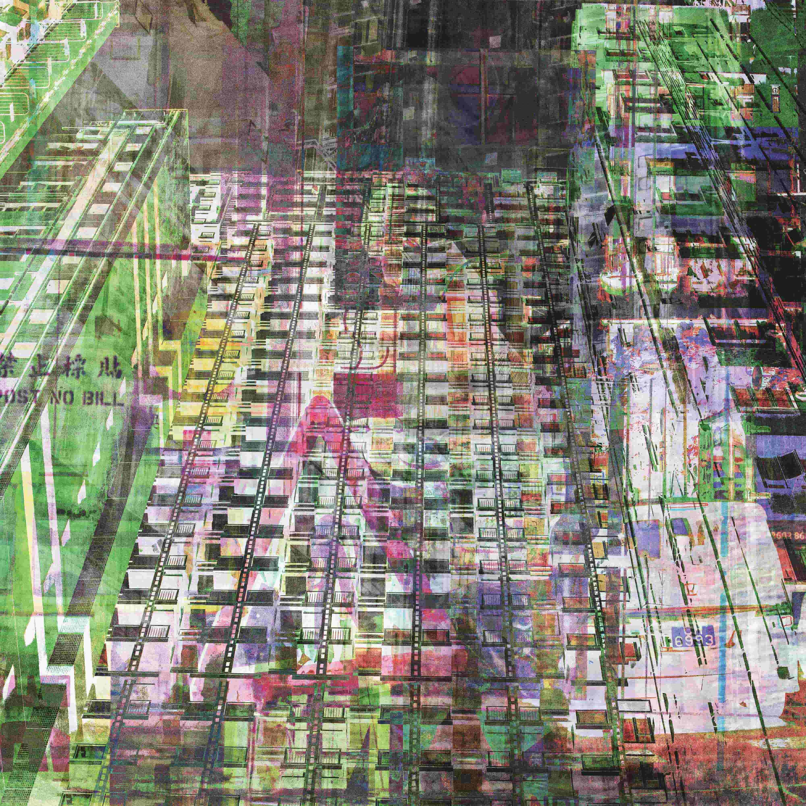

Misc. Etc. Hong Kong
2019
Photography, Abstract, Images
–
An abstract documentation and reflection of Hong Kong's density and geography, created with hundreds of individual images taken over the course of a month.
This collection was displayed at the City University of Hong Kong's School of Creative Media in 2019, and again in 2020 at The Open House in Waterloo, Ontario.


